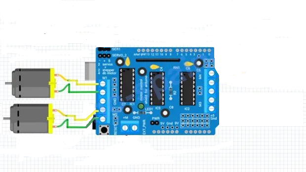
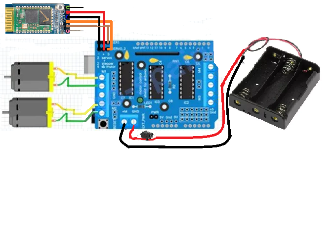

El primer paso para armar el robot es conectar el Arduino con el motor shield. Asegúrate de alinear correctamente los pines y conectarlos sin aplicar fuerza excesiva. Debe quedar haci:
El siguiente paso es conectar o soldar los motores a los pines M1 y M2, asegurándote de que las conexiones coincidan con la polaridad correcta.

luego de ello conectar el modulo bluetooth Maron:S ser1 Naranja:S servo_2 Negro: + Rojo: -
Después, coloca las pilas para alimentar el sistema. Conecta el terminal negativo al conector -M del motor shield. Conecta el terminal positivo al motor shield pasando primero por un interruptor, y luego conecta el otro lado del interruptor al conector +M llamado gnd.

Después, conecta el cable tipo B al Arduino y carga el código (que se encuentra en la siguiente página) utilizando la aplicación de Arduino.